together with the literature stream discussing technology in relation to human cognition and creativity. In the first part, it reviews the existing hypotheses about what concepts are and how these concept ontologies model our creative process. In the second part, it addresses how different technologies embed different Theories of Concepts (TOCs) and how this affects the creative process. From this view point, it will be possible to formulate a methodology of inquiry to understand where the current trend towards a probabilistic interpretation of concepts may lead us to.
Because of its trans-disciplinary nature, this literature review spans several fields. The review of concept ontologies lies at the intersection between philosophy, psychology and cognitive science, while the discussion about the relationship between technology and creativity touches upon design, philosophy of technology and creativity literature.
There is no consensus on a single theory of concepts as of today, in spite of the thousands of years of philosophical discussions about the nature of ideas that have been ongoing since the pre-Socratics. The two fundamental questions that a TOC must provide an answer to are: (1) how do concepts form in our mind (2) how they relate to one another. In this section several competing hypotheses are presented as discussed by (Laurence and Margolis 1999):
The Classical Theory of concepts (CT). CT is based on definitions. It relies on presence/absence of given properties to establish reference to the world. CT has been criticized for its rigidity and for its inability to explain evidence emerging from psychological experiments.
Prototype Theory (PT). (Rosch 1978) and (E. E. Smith and Medin 1981) developed PT to explain the results of their experiments involving typicality effects. PT adopts probability and fuzzy logic to formalize the categorization process.
Theory-Theory (TT). (Murphy and Medin 1985) and (Carey 1991, 2009) developed TT based on the intuition that concepts rely on theories about the world that we formulate, assimilating concept formation to the scientific method.
Neo-classical Theory (NT). (Jackendoff 1989) proposed that concepts have partial definitions which are necessary to identify their extension. NT is however primarily concerned with lexical concepts.
Conceptual Atomism (CA). (Fodor 2008) proposes that concepts have no structure and highlights compositionality as a necessary component of concepts.
Each theory is discussed in a separate subsection, highlighting along the way the potential fallacies and weaknesses. Some of these issues are shared across more than one theory and serve as guide for the theoretical framework. The summary descriptions for each theory are taken verbatim from (Laurence and Margolis 1999).
Most concepts are structured mental representations that encode a set of necessary and sufficient conditions for their application, if possible, in sensory or perceptual terms.
Classical Theory (CT) holds that most concepts have definitional structure. According to this view, the concept bird might be composed of a set of properties an object must have in order to count as a bird, such as has wings, can fly, lays eggs and so on. This implies that concepts must have a hierarchical structure, in that concepts are effectively composed by other structurally simpler representations. Following this hierarchical structure, new concepts can be formed using existing concepts combined in a new definition.
Albeit its simplistic approach and numerous problems, CT has been around since antiquity and stood undisputed until the 1950s because of its explanatory power. Here is a list of different aspects of concepts and their corresponding explanation according to CT (Laurence and Margolis 1999):
Concept Acquisition. Learning a concept is just a matter of learning the simpler individual components that form its definition.
Categorization. The process of applying a concept to a particular instance is as trivial as checking the properties of that object.
Epistemic Justification. We can justify a belief we have about the world by determining whether its defining properties are satisfied.
Analyticity and Analytical Inferences. The definitional structure of concepts guarantees that certain statements can be inferred from others without empirical evidence.
Reference Determination. Concepts are semantically evaluable by their definition, which means that every statement can either be true or false.
In spite of the obvious merits of CT, numerous critiques were raised by philosophers and psychology scholars over the years. In the forthcoming paragraphs are highlighted six major ones.
In Meno, Plato (1998) provides one of the first critiques to CT. In this dialogue, Meno begins by asking Socrates how (in Greek ἀρετή) is acquired and Socrates replies that he does not know how to define it and asks Meno to help. Meno at first suggests that virtuous actions depend on the person’s age, gender, role in society and so on, but Socrates is looking for some quality that is common to all, something more general. Meno then suggest that there are some common quality to all virtuous men such as justice and temperance, but Socrates is not satisfied because Meno did not provide a full list and he does not know what is common among these qualities. Meno is understandably confused and frustrated. The exchange continues:
Meno: But in what way will you look for it, Socrates, this thing that you don’t know at all what it is? What sort of thing, among the things you don’t know, will you propose to look for? Or even if you should meet right up against it, how will you know that this is the thing you didn’t know?
Socrates: Do you see what a contentious debater’s argument you’re bringing up—that it seems impossible for a person to seek either what he knows or what he doesn’t know? He couldn’t seek what he knows, because he knows it, and there’s no need for him to seek it. Nor could he seek what he doesn’t know, because he doesn’t know what to look for.
(Plato 1998, Meno, 80d-e)
Plato is suggesting here through Socrates’ words that if we subscribe to a definitional structure of concepts, we end up in a paradox as it seems that for most concepts a definition is very hard to find. It also becomes very problematic to justify how we recognize something we have no definition for. Very few examples of defined concepts exist, mostly mathematical, such as Prime Number. Other rather fundamental concepts like Event, Object or Cause do not have clear definitions, yet we use them all the time. This is a fundamental problem of CT as there seems to be no need for a definition to exist in order to apply concepts. For this reason, ascribing definitional structure to concepts creates the epistemological paradox highlighted by Plato.
The idea that some statements are true by virtue of meaning alone has fascinated many, but we owe a great deal to (Kant 1998) for discussing at length the distinction between analytic and synthetic propositions in his . Analytic judgments are those deemed to be true only by virtue of definition, a typical example would be: . Synthetic judgments, on the other hand, are statements that must be verified through experience, for example: . The essential difference, according to Kant, is that the truth value of analytic statements does not depend on the state of the world, while the opposite is true for synthetic propositions.
This line that Kant drew has been subject of debate for centuries. On one hand, the distinction has been the foundation of the empiricist paradigm, which, in an attempt to get rid of metaphysics altogether, radically stated that all knowledge comes from experience. Problematic knowledge for this agenda such as mathematics and logic could be placed in the box of analytic a priori.
On the other hand, the empiricist view has been criticized for being too reductionist, as it implies that knowledge is limited to what can be determined through the senses and that all knowledge must come from experience. This view has been challenged by other more metaphysical approaches such as idealism, which hold that there is knowledge that cannot be acquired by experience, and that some knowledge can be accessed through pure thought (a priori).
Kant’s cleavage between analytic a priori and synthetic a posteriori is still relevant today and is the basis of many debates in philosophy, which continue to this day, with no clear consensus on the correct approach. Among the critics, Quine questioned the notion of analyticity itself, arguing that self-contradiction and analyticity are the
two sides of a single dubious coin
Quine suggested that such distinction
is an unempirical dogma of empiricists, a metaphysical article of faith
, primarily by claiming that there is no such thing as analytic statements. Firstly because there is no definition of similarity or analyticity that is analytic and second, because individual statements are never confirmed in isolation.
The typicality effect is the finding that people are quicker to make category judgments about typical members of a category than they are to make such judgments about atypical members. For example, they are more quickly able to judge that a dog is a mammal than they are able to judge that a whale is a mammal. The study conducted by (Rosch and Mervis 1975), highlights one of the most influential arguments against CT. According to CT all instances of a concept should be equally good examples as long as they match the definition, but prototypical judgments provide evidence against this claim as people seem to rank certain members of a category as more representative than others. The studies on typicality effect demanded for a revision of CT to match the empirical data, which pushed the development of alternative theories of concepts able to accommodate for typicality effects, as well as some of the other fundamental issues of CT discussed so far.
The advent of experimental psychology led to many of the critiques to CT. One particular implication about the hierarchical structure has been shown to be incompatible with the definitional hypothesis. If concepts have complex structure, then one would expect the definitional complexity to affect the psychological complexity, but the evidence collected by (Foss 1969) demonstrates that . There seems to be no significant difference in cognitive effort when applying concepts that are more complex than others, such as in the case of believe and convince (which is defined as the combination of cause to and believe). This line of research suggests that all concepts are equally expensive to apply, a finding that does not support the hypothesis of a hierarchical structure of concepts, a foundational aspect CT.
It is possible to have a concept in spite of massive ignorance and/or error, so concept possession cannot be a matter of knowing the definition (Kripke 1980; Putnam 1970, 1975). For example, the concept associated with the disease smallpox may have been erroneously defined in the past as divine punishment, whereas now we understand it as something rather different. This does not imply the concept of smallpox refers to a different disease now, yet there is substantial difference in its definition. It seems that it is indeed .
(Medin 1989) suggests that . There are abundant examples of this phenomenon. Medin asks, are carpets part of the furniture? This problem can be reduced to the first issue, that is most concepts lack of a definition.
Most concepts are structured mental representation that encode the properties that objects in their extension tend to possess
In Prototype Theory (PT), concepts have no definitions. According to PT, a concept , following the idea of family resemblance by (Wittgenstein 1953). PT is developed as an alternative to fix the shortcomings of CT exposed by Psychology in the 1970’s, primarily the evidence of typicality effect discussed earlier in this chapter. For (Wittgenstein 1953), as for (Rosch and Mervis 1975), . The whole set of properties that overlap in games forms a similarity space: .
PT is also able to effectively describe concept acquisition: acquiring a concept is as simple as assembling its features. Effectively, this mechanism embodies a statistical procedure, rather than a logical one as described by CT. Following from the categorization model, this procedure consists of identifying a new region in the similarity space. Because similarity is such a central aspect in the theory, PT advocates developed a number of psychological measures for it. (Tversky 1977) proposed a similarity measure known as Contrast Principle which is widely used in psychology, which is based on the presence and absence of features. Another popular method is to define properties as geometrical dimensions and use measures of distance within this space to describe similarity between two items (see Section 2.2.6). Furthermore, PT is well suited to sidestep conceptual fuzziness as it allows to formally describe ambiguity using the mathematical construct of fuzzy sets. There are, however, significant shortcomings also for PT.
Experimental psychology has shown that typicality effects occur even in well-defined concepts, i.e. concepts that people can immediately provide a definition for, such as prime number or female (Armstrong, Gleitman, and Gleitman 1983). Interestingly, this study would be considered controversial today given that the binary notion of gender has been obsoleted. However, the argument for mathematically defined concepts still stands, so the results of this study suggest that typicality effects cannot be counted as strong evidence supporting PT.
Ignorance and error is as much a problem for PT as it is for CT. Indeed, . There is essentially no way to account for misapplied concepts in PT. The Swan concept would encode that the prototypical instance is white based on the most frequent occurrences, but black swans are still swans. Penguins lack one of the most typical properties of birds, yet they are considered birds.
Just as many concepts lack definitions, many concepts also lack prototypes. One can easily construct such concepts as Objects longer than 1 centimeter or 41st century technology, that are either too broad or simply have an empty extension and therefore cannot have prototypical instances. This aspect of concept combination making is where CT seems to have an edge over PT. Crisp concepts with formal rules of interaction among them can generate new concepts that may or may not have an extension.
PT does not have an adequate account for compositionality, since the properties of complex concepts are not generally a function of the prototype of their constituent concepts. For example, the prototype for pet fish would have properties such as small, colorful and living in bowls or tanks which hardly relate to the qualities of neither a prototypical pet, a dog or a cat would be furry and affectionate, nor a prototypical fish, a trout or a sea bass would be gray and living in the wild (Osherson and Smith 1981).
The role of compositionality is central to language and meaning. This idea is already present in Frege’s work,
Über Sinn und Bedeutung
(On Sense and Reference), where he argued that the meaning of complex expressions is determined by the meanings of its parts and the rules of its composition (Frege 1892). It is echoed by Fodor in
The Language of Thought
, where Fodor argues against definitions (critiquing CT), exposing them as too vague and general to be of any use (Fodor 1975). Fodor pointed out that instead of relying on definitions, we should focus on understanding the context in which words are used, and more specifically in understanding the compositionality of language (Fodor 2008). Without a proper account for how compositionality is achieved in PT, the framework cannot explain how concepts relate to one another in order to form new meanings.
Concepts are representations whose structure consists in their relations to other concepts as specified by a mental theory
According to Theory-Theory (TT) cognition is similar to theory construction and scientific reasoning. The main appeal of TT is that it provides an explanation for , where a theory is replaced with a better one to explain the same data. TT provides an account of how conceptual change is driven by a combination of rational and empirical processes, allowing for the development of more sophisticated concepts that are better suited to the environment. TT also provides a unified explanation of the development of core cognitive abilities such as language and counting (Carey 1991, 2009).
TT suggests that cognition is driven by a process of hypothesizing, experimentation, and revision. As new information is gathered and existing concepts are modified, more sophisticated concepts emerge. This process is driven by the desire to make sense of the world and to predict future events. As a result, TT can account for both conceptual development and the transfer of knowledge across domains (Murphy and Medin 1985).
TT also provides an account of how knowledge and conceptual understanding are acquired and retained. Knowledge is acquired by actively engaging with the environment, gathering information, and testing hypotheses. This process allows for the development of more sophisticated concepts as knowledge is accumulated and understood. In addition, TT suggests that knowledge is retained through a process of encoding and recall. This means that knowledge is stored in a form that can be retrieved when needed.
In spite of the appeal that this framework might have there are several unanswered questions summarized below.
It is possible to have a concept in spite of its being tied up with a deficient or erroneous mental theory, but according to TT concepts do not inform us about the properties of the objects in their extension. The smallpox argument still holds against TT as different mental theories do not imply a different disease.
. Imagine two people have slightly different theories about the concept animal, for example person A believes that all animals are physical entities and person B believes instead that some species also have a non-physical soul. These theories are similar, but they are not the same, so TT fails to explain how
. There is no account for how scientific theories transition other than the
the mysterious logic of discovery
so claiming the similarity to the scientific method does not provide any additional insight about how concepts shift.
Concepts have partial definitions in that their structure encodes a set of necessary conditions that must be satisfied by things in their extension.
According to Neo-classical Theory (NT), most concepts are structured mental representations . NT claims that certain aspects of linguistic phenomena can be explained by conceptual structure. The fact that causal constructs have a clear distributional pattern serves as Jackendoff’s starting point:
x killed y → y died
x lifted y → y rose
x gave z to y → y received z
x persuaded y that 𝒫 → y came to believe that 𝒫
All of these inferences might be viewed as being unrelated to one another, . According to Jackendoff, the definition of a causative implicates the occurrence of a specific event. On the basis of this supposition, a single rule that applies to all of these circumstances may be introduced to explain this pattern:
𝒳 cause ℰ to occur → ℰ occur
For example, (1) could be analyzed as
x cause [y died] to occur
, and similarly for (2),(3) and (4). Causatives are only one of the aspects in which NT finds supports, others include polysemy, syntactic alterations, and lexical acquisition.
Jackendoff tackles the issue of compositionality, which he refers to as the
creativity of language
, assessing that concepts cannot just be the encoding of all the encountered instances. Therefore he deduces that there must be a
potential degree of indeterminacy either in the lexical concept itself, or in the procedure for comparing it with mental representations of novel objects, or in both
He suggests that the words and ideas we hold in our vocabulary are built from a natural set of potential concepts, influenced by both language and non-language experiences.
NT does not intend to explain everything about concepts and is more focused on the semantic and lexical patterns that emerge in language. For this reason, some of the issues found in previous theories of concepts are not addressed and remain unresolved.
Definitions are still problematic for NT. In fact, if incomplete definitions are expanded into complete definitions then NT has all the problems that are associated with CT. If, instead, they are left incomplete, then NT has no account of how concepts are applied to their instances. NT is not concerned with how lexical concepts are applied to the entities they refer to, so this aspect of concepts is simply not explained.
The introduction of partial definitions does not help with the problem of ignorance and error, much like in PT. Because NT effectively does not provide a theory for reference determination, it is still unclear how we can have a concept in spite of having erroneous information about its definitions (Small pox argument still applies). Jackendoff proposes that for lexical concepts that refer to physical objects incorporate a 3D model of them. However, it is also possible that an animal that closely resembles a duck is not actually one, and vice versa, that a duck may not appear to be one for whatever reason.
Neoclassical structure cannot explain how a word retains aspects of its meaning across different semantic fields. Either its conceptual constituents must themselves have neoclassical structure, and so on, or else no structure is needed at all. To understand this methodological objection pushed vigorously by Fodor (1998) ((1998, p . 50)), here is an example:
Harry kept the bird in the cage
Sam kept the crowd happy
In these two sentences, Jackendoff would argue that on one hand there is the intuition that the same word is used (Keep), on the other that the sense of Keep is different in the two cases. The definition of Keep as would account for the feeling that Keep is univocal, while the differences are explained by the different semantic fields, each of which has its own particular inferential patterns (Jackendoff 1995). Fodor objects to this explanation by questioning the assumption that the constituent of the definition (i.e. Cause, State, Time, Endure) must also themselves be univocal. He suggests that Jackendoff logic runs into a paradox when attempting to assess if Cause is polysemic. If it is, then the definition of Keep is no longer univocal and the argument in favor of definitions is lost. If it is not, then what explains the univocality of Cause across semantic fields? Fodor suggests that there are only dead ends from here. Either a new univocal concept X is needed for the definition of Cause, which would lead to an infinite regress (what guarantees the univocality of X?), or just accept that Cause is univocal because it always means cause, in which case then the same could be said for Keep and no theory is needed at all.
Lexical concepts have no hierarchy or structure, thus they cannot be broken down
Conceptual Atomism (CA) is different from previous theories because, rather than arguing a particular structure, it questions the fundamental assumption of conceptual structure itself. Because CA assumes no structure, it is able to sidestep most problems discussed for other theories. The theory mainly provides an account for how the concept references are determined, that is Asymmetric Dependance Theory. There is an asymmetric dependency between laws such as , ,’ etc., and the law . This is because the latter law does not depend on any of the Y1, Y2, ..., Yn laws in the same way. The intuition here is that X̂ will only be caused by the question because dogs (X) cause instances of X̂. Instances of foxes causing instances of X̂ are only due to them being mistaken for dogs and dogs causing instances of X̂.
Two important implications of this theory are the rejection of mental images and the rejection of context-sensitive meaning. First, while other theories might argue that a particular concept is represented by a mental image, CA rejects this idea and instead suggests that the concept is merely a reference to an external object or situation. Second, while other theories might allow for context-sensitive meaning (i.e., different meanings of words depending on the context), CA rejects this idea as well and instead suggests that all meanings of atoms are fixed and will not vary based on context.
Overall, CA offers an interesting alternative to traditional theories of conceptual structure, since it does away with many of their complexities and assumptions about mental images and context-sensitive meanings. While it obviously has its critics (who argue that it fails to account for more complex concepts), it offers an interesting look at how language might work.
There are however several issues with CA, discussed below.
According to CA, . According to Fodor, there is only one way that cognitive science can explain how an idea is learned, and that is by speculating on a mechanism by which a brand-new, complex concept is constructed from its constituent parts. For example one can learn the concept of Mother by combining the concepts Female and Parent. This process assumes that one already possesses the concepts Female and Parent, so when we ask about how these concepts were acquired, the answer might be that they are themselves composed of simpler concepts, but eventually this has to stop. So if there are no other explanations about how concepts are learned, one must conclude that there are some primitive concepts that are innate.
CA cannot explain psychological phenomena such as categorization. If concepts lack structure, atomists have no way to make sense of the empirical evidence about typicality effects, documented in psychology by (Rosch and Mervis 1975; Rosch 1978). Although Fodor acknowledges the significance of prototypes, he disputes their role in the semantic structure of concepts.
CA lacks for . (Rey 1993) has put together a case against conceptual atomism based on the fact that NT’s partial definitions provide an explanation about analytic data. He asserts that, regardless of whether there are any analytical truths, individuals undoubtedly have intuitions about what is analytical. According to Rey, these intuitions emerge from the relationships that are formed among concepts. We therefore have an argument against CA and an argument in favor of NT: as Rey points out, there is no plausible atomistic alternative.
In a sense CA has no issue with combining concepts, but primarily because the theory is centered around lexical concepts. If we extend CA to a comprehensive theory of concepts, then some familiar issues still arise. In this context, . For example consider the concept Grandfathers whose granddaughters are friends with politicians. It is unlikely that this concept stands in a lawful dependency relation with the property of being . In other words, just like in PT and the pet fish example, the asymmetric dependence relations of complex concepts are not a function of the asymmetric dependence relations of their constituents.
The theories in this section, summarized in Table 2.1, provide a foundation for understanding the relationship between technology and creativity, which is explored further in the next section. The assumption is that when these concept theories are mechanized, their advantages and problems impact the creative interaction. Thus, examining how different concept ontologies in various implementations affect the creative process becomes valuable.
| Theory | Description | Problems |
|---|---|---|
| Classical Theory |
|
|
| Prototype Theory |
|
|
| Theory-Theory |
|
|
| Neoclassical Theory |
|
|
| Conceptual Atomism |
|
|
This section reviews some key literature streams discussing the relationship between humans, technology and creativity. The first two subsections address the perspective of philosophy of technology, which will serve as a starting point for the inquiry into the history of computation and creativity. In the following subsections an overview of a series of milestones that link computing technology and creativity are presented in parallel. The purpose of this arrangement is to highlight the trans-disciplinary spillover of ideas that interconnects the theories of concepts discussed in the previous section with research in artificial intelligence as well as art and design. The objective of this review is to explore the possibility of framing computational creativity and the current trend of data-driven AI within the post-phenomenological view of technology, which constitutes the starting point of this thesis’ methodology discussed in Chapter 3.
Philosophy of technology is an interdisciplinary field that combines insights from philosophy, sociology, history, and cultural studies to investigate the complex relationship between humans and technology (Ihde 1993). It raises questions about the nature, purpose, and impact of technology on human existence, ethics, and values. By examining technology’s historical development, the philosophy of technology seeks to understand how technology has transformed human lives and societies. Three main themes can be found in literature:
Technicity: The concept of technicity refers to the idea that technology is not merely a tool but a condition of human existence (Feenberg 1991). Technicity highlights the inseparable relationship between humans and technology, emphasizing that technology is not just an external object but an integral part of human experience.
Technological Determinism: Technological determinism is the belief that technology drives social change, often leading to unintended consequences (M. R. Smith and Marx 1994). This perspective suggests that technological innovations have their own logic and inevitability, which can lead to both positive and negative outcomes.
Technological Mediation: Technological mediation refers to the role of technology as a mediator between humans and the world (Verbeek 2005). This concept emphasizes that technology does not simply represent an external reality but shapes human perceptions and experiences.
Technology is a relatively young topic in Philosophy, yet most authors start their inquiry by looking at how Greek philosophers addressed it in relation to nature. For example, Aristotle deemed technē to be deeply interrelated with the notion of physis. In Physics, he states:
action for an end is present in things which come to be and are by nature
and therefore technē is the perfect example of action for a purpose. According to Aristotle, what sets physis and technē apart is that physis is itself its own efficient cause, whereas technē requires an external cause to be set in motion. In other words, physis is self-realizing towards its final cause, just as much as technē is, and the only difference is that physis is set in motion by itself, whereas technē requires an external driving force. According to Aristotle, technē is not understood as imitation of physis
form
, but its action: it is creating for a purpose:
Further, where a series has a completion, all the preceding steps are for the sake of that. Now surely as in intelligent action, so in nature; and as in nature, so it is in each action, if nothing interferes. Now intelligent action is for the sake of an end; therefore the nature of things also is so. Thus if a house, e.g. had been a thing made by nature, it would have been made in the same way as it is now by art; and if things made by nature were made also by art, they would come to be in the same way as by nature. Each step then in the series is for the sake of the next; and generally art partly completes what nature cannot bring to a finish, and partly imitates her. If, therefore, artificial products are for the sake of an end, so clearly also are natural products.
(Aristotle 1983, Physics, Book II, Part 8)
It is interesting to notice how in translation, technē is referred to as art. In fact the semantic area covered by the word technē in ancient Greek is overlapping substantially with the idea of craftsmanship and fine arts, which is arguably far away from the notion of technology we have today. To understand this semantic gap, when must address the fundamental change in the relationship between man and nature introduced by the Copernican Revolution.
By adopting the scientific method, humans transitioned from being mere observers of an unchangeable world, as the ancient Greeks were, to actively probing nature for answers through technology (e.g., the telescope). This transformation drastically altered the way humans perceived their surroundings. The ancient Greeks deemed themselves vastly inferior to nature, which resulted in a humble and submissive attitude towards the natural world (Galimberti 1989). This modest perspective was also mirrored in Greek mythology, where the gods rarely concerned themselves with human affairs, and when they did intervene, it was driven by their own interests rather than concern for mortals.
Centuries later, the Judaic-Christian tradition altered this dynamic, portraying nature as God’s gift to humankind so that they could prosper and fulfill God’s plan(Galimberti 1989). This anthropocentric view of the world encouraged a different attitude towards nature, positioning it in service of humans rather than something to be feared. Nevertheless, the divine mysteries restrained human knowledge, as God’s plan might not be fully comprehended by humans who simply had to accept it (Galimberti 1989).
Galileo and the Copernican revolution challenged this worldview, demonstrating that, with technology and rational thought, mankind could investigate the mysteries of nature without the mediation of gods. The Age of Enlightenment placed human rationality at the center, while nature was no longer a humbling source of awe and wonder but instead viewed as something to be understood and controlled (Ihde 1990; Galimberti 1989). The role of technology in this dynamic is crucial because it is through technology that humans exert this control.
These ideas are captured in Heidegger’s thought as pointed out by Lovitt:
Modern philosophical views of technology cannot avoid discussing the thought of Heidegger. Martin Heidegger was a German philosopher and a seminal thinker in the continental tradition of philosophy. He is best known for his contributions to phenomenology, hermeneutics, and existentialism. Heidegger’s work has had a profound influence on 20th-century philosophy, particularly on the fields of existentialism, deconstruction, and postmodernism. He is also infamously known for being involved with Nazism, which makes him a controversial author to discuss. However, this thesis is mainly concerned with his critiques of technology and modernity, rather than his political views. If the reader has any issue with this philosopher, they are welcome to reach out to me with their observations.
Heidegger’s view of technology is complex and multifaceted. In he deems the Greek definition (technē) unfit to describe modern technology: . He then points out a mutual relationship:
It is said that modern technology is something incomparably different from all earlier technologies because it is based on modern physics as an exact science. Meanwhile we have come to understand more clearly that the reverse holds true as well: modern physics, as experimental, is dependent upon technical apparatus and upon progress in the building of apparatus.
He suggested that technology is as a way of understanding the world that shapes the human experience. The modus operandi of scientific progress habituates us to look at the world in terms of how it can be used and transformed, according to Heidegger, it is never neutral (Heidegger 1977). For example:
[t]he forester who, in the wood, measures the felled timber and to all appearances walks the same forest path in the same way as did his grandfather is today commanded by profit-making in the lumber industry, whether he knows it or not. He is made subordinate to the orderability of cellulose, which for its part is challenged forth by the need for paper, which is then delivered to newspapers and illustrated magazines. The latter, in their turn, set public opinion to swallowing what is printed, so that a set configuration of opinion becomes available on demand.
He also points out how modern technology can change the essence of nature:
In the context of the interlocking processes pertaining to the orderly disposition of electrical energy, even the Rhine itself appears as something at our command. The hydroelectric plant is not built into the Rhine River as was the old wooden bridge that joined bank with bank for hundreds of years. Rather the river is dammed up into the power plant. What the river is now, namely, a water power supplier, derives from out of the essence of the power station.
Heidegger’s view of technology is a rather pessimistic one. Several philosophers have commented and continued the work of Heidegger attempting to reconcile the human and non-human in different forms. Among them, Don Ihde, an American philosopher, revisits Heidegger’s thought on technology in his book (1990) offering a new perspective on the control we have on technology. According to Ihde,
[t]he reason technology cannot be controlled is because the question is wrongly framed. It either assumes that technologies are merely instrumental and thus implicitly neutral, or it assumes that technologies are fully determinative and thus uncontrollable. Both extremities are involved in the current debates, but both miss the point of the human-technology and the culture-technology relativities that would reconstitute the debate
In other words, Ihde’s reframes the question into .
Ihde points to the interdependence that exists between culture and technology observing that . As an example he discusses how different writing instruments affect the style of the composition. An ink pen, a typewriter, and the word processor each present varying speed of writing and ease of editing, which in turn affect the writing style (Ihde 1990, 142). In the case of the word processor, Ihde points out that . A similar point was made by Heim (1999) as he argued in his book that writing with the aid of computers implies a completely different notion of the writing task itself. Along the lines of this post-phenomenological definition of technology, scholars such as Bruno Latour and Peter-Paul Verbeek bring their attention to the mediating role of technology.
Bruno Latour is a French philosopher, anthropologist and sociologist. He is best known for his work in the field of science and technology studies. Latour argues that technology is (Latour 1990) in the sense that a purely social world can never exist. The assemblage of a heterogeneous network of humans and non-humans is what produces stability. The example he brings up is that of a door. If a door is removed, a significant amount of work would be required by the human to fulfill the same purpose. A new hole would need to be made and bricked back up to go indoors. With the door, one is able to walk in through the combined efforts of both the human and the non-human. To go through, the door must present itself in a way that it can be opened AND the human must interact with it in a specific way to open it. According to Latour, the symmetry of this encounter is what creates stability in society.
Peter-Paul Verbeek is a Dutch philosopher who also has written extensively on the role of technology in society, following Ihde’s lead. In his book , Verbeek proposes an ethical framework for designing technologies which takes into account both human values and technological capabilities (Verbeek 2011). He argues that technologies should not only serve utilitarian purposes but also take into account moral considerations such as justice, fairness, autonomy and responsibility. By doing so, he believes we can create more meaningful relationships between humans and their environment through technology.
Both philosophers revisit the idea already present in Heidegger and Ihde, that technology is not just a means to an end, but it also shapes the way we live in society, thereby defining our reality. According to this post-phenomenological view of technology, there is no separation between the human and the non-human, rather a mediation. Under these assumptions, what can be said about computing technology? In what mediating relationship do humans and computers stand in the context of creative practices? In what way does the mediation afforded by a brush differ from that afforded by a computer? The next subsections address these question with particular focus on the impact that different approaches to computation affect the creative process.
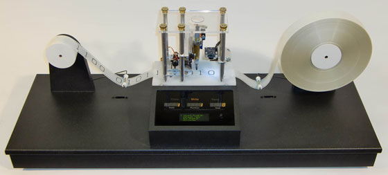
The debate about whether machines can produce anything new at all dates back to Charles Babbage’s invention. According to a famous passage from Ada Lovelace’s notes:
[t]he Analytical Engine has no pretensions whatever to originate anything. It can do whatever we know how to order it to perform
(Menabrea et al. 1843, Note G)
On the other hand, (Turing 1950) thought that ultimately, robots might be able to simulate human-like reasoning to the point that a human would not be able to tell the difference. Turing (1950)’s prototypical computer, much like Babbage’s analytical engine, is a symbol manipulator (2.1). It adheres to the operator’s set of rules (i.e. program) when reading and writing characters to an infinitely long tape. Its working effectively embodies CT, in the sense that crisp rules govern the process to a unique conclusion or result that is deduced analytically from the premises.
Even today, it is not uncommon to hear the analogy between a computer and a human mind. In the early days of computer history, Turing was perhaps the first to assimilate human thinking as computation: a man provided with paper, pencil, and rubber, and subject to strict discipline, is in effect a universal machine (Turing 1937). After him, many were fascinated by the possibility that through this new technology we could automate even a part of our cognitive processes. Turing’s vision launched an entirely new area of study known as Artificial Intelligence (AI).
The origins of AI are widely attributed to the Dartmouth College Conference, which took place during the summer of 1956. This gathering brought together a group of notable scientists, including John McCarthy, Marvin Minsky, Nathaniel Rochester, and Claude Shannon, to explore the possibility of creating machines that could emulate human thought processes. The conference was grounded in the philosophical concepts put forth by Turing, which posited that computers could be programmed to solve problems using methods akin to those employed by humans. The ideas generated at this event laid the foundation for much of the subsequent research in the field of AI.
The era of AI research that followed the Dartmouth College Conference is commonly known as Good Old-Fashioned Artificial Intelligence (GOFAI). During this period, researchers focused on symbolic reasoning and problem-solving. The outcomes of their investigations laid the groundwork for modern AI technologies, which have found application in various domains. However, the GOFAI approach also encountered opposition and criticism. Some scholars raised objections, particularly in light of the emergence of PT and the fallacies of CT that it exposed. In fact, some of the issues associated with CT are directly linked to those presented by GOFAI.
According to (Searle 1980) and his Chinese room thought experiment, symbolic systems just need knowledge of the proper rules of manipulation rather than necessarily requiring comprehension of the symbolic references.
Since it is unable to determine how each new piece of information connects to a particular idea, GOFAI is constrained in its ability to update its opinions about preexisting concepts. As the number of concepts grows, the combinatorial explosion makes the issue impossible to solve with logic alone. This is referred to as the frame problem (Dennett 1984) and is an epistemological byproduct of Plato’s problem, discussed in [sec:platosproblem] and the problem of ignorance and error.
Symbolic reasoning
sustains no creative inductions, no genuinely new knowledge, and no conceptual discoveries
This is because . This echoes Lovelace’s intuition that the machine only can produce what we ask it to, it does not question if the instructions have a valid reference to the world.
The rigidity of the definitional approach adopted by GOFAI and its reliance on analytic processes makes it unfit to model conceptual fuzziness and graded categorization. The first prototype theorists (Oden 1977; Rosch and Mervis 1975) suggest fuzzy-set theory as a complementary theory to PT that could better model such phenomena.
Overall, the successes of GOFAI are still to be praised. Perhaps among the many achievements of the program, the most remarkable was to beat a human at chess. It is the case of IBM’s Deep Blue, a supercomputer that was first defeated by Kasparov 4-2 in 1996, but then won in a rematch only a year later by 3½–2½.
GOFAI’s attempts at generating original media are numerous and span multiple domains. For example, it is widely accepted that the 1957 string quartet composition Illiac Suite, later known as String Quartet No. 4, was the first musical score created using an electronic computer. Lejaren Hiller and Leonard Isaacson worked together to create the compositional material using the ILLIAC I computer at the University of Illinois at Urbana-Champaign, where both authors were professors (Hillier and Isaacson 1959).
The piece is divided into four movements, each of which corresponds to one of four experiments: the first movement deals with the creation of cantus firmi, the second with the generation of four-voice segments using a variety of rules, the third with rhythm, dynamics, and playing instructions, and the fourth with a variety of models and probabilities for generative grammars and Markov chains (Hillier and Isaacson 1959). The use of pseudo-randomness combined with rules is one of the ways in which GOFAI is able to explore novel combinations while still maintaining an overall structure. The same approach is also found in the visual arts, where some of the philosophical ideas attuned to GOFAI and CT set in motion a new movement.
In parallel to the AI advancements discussed in the previous section, the visual arts community also embraced forms of computation. The Generative Art movement began in the 1960s and has since become an important part of contemporary art. It is a form of art that uses computer algorithms to create unique works, often with unpredictable (but deterministic) results. Its origin is specifically linked with the appearance of the programmable plotter, a machine capable of drawing on paper following procedural instructions.
The main exponents of generative art are artists such as Manfred Mohr, Frieder Nake, Georg Nees, and A. Michael Noll. The movement started in the late 1960s when these artists began experimenting with plotters to create visual art, inspired by the philosophy of German philosopher and mathematician Max Bense. His work focused on the idea that art should be generated and evaluated with mathematical principles (Nake 2012). Rather than relying on traditional artistic sensitivity, he advocates for information aesthetics, an interdisciplinary concept of developing exact, scientific measures for introducing objectivity into aesthetics (Nake 2012; Klütsch 2012). He argued that this approach would allow for greater creativity and expression in art, as well as providing an opportunity to explore new forms of aesthetic experience.
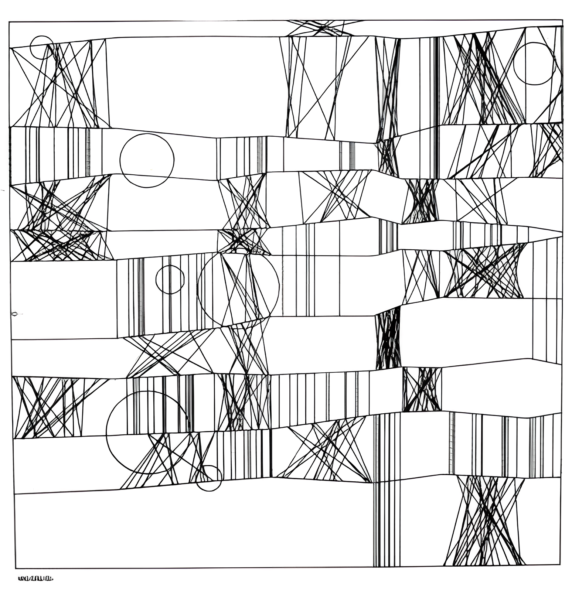
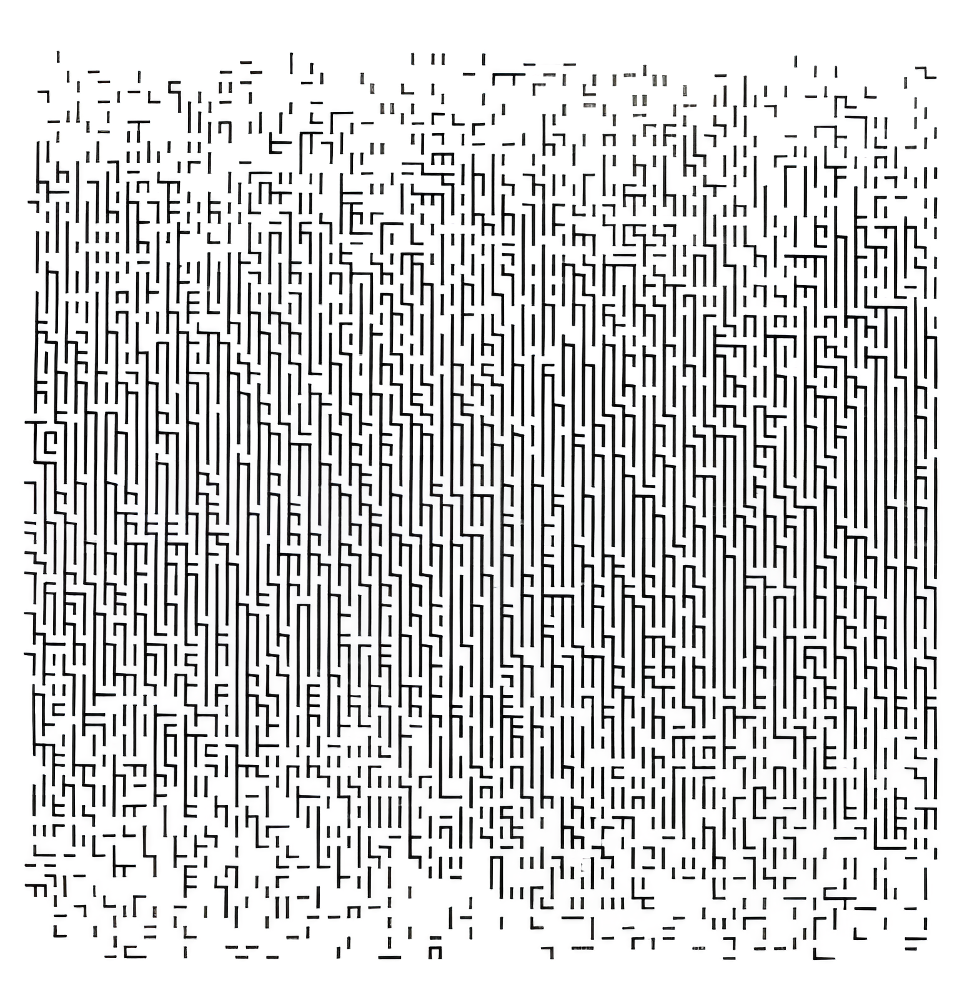
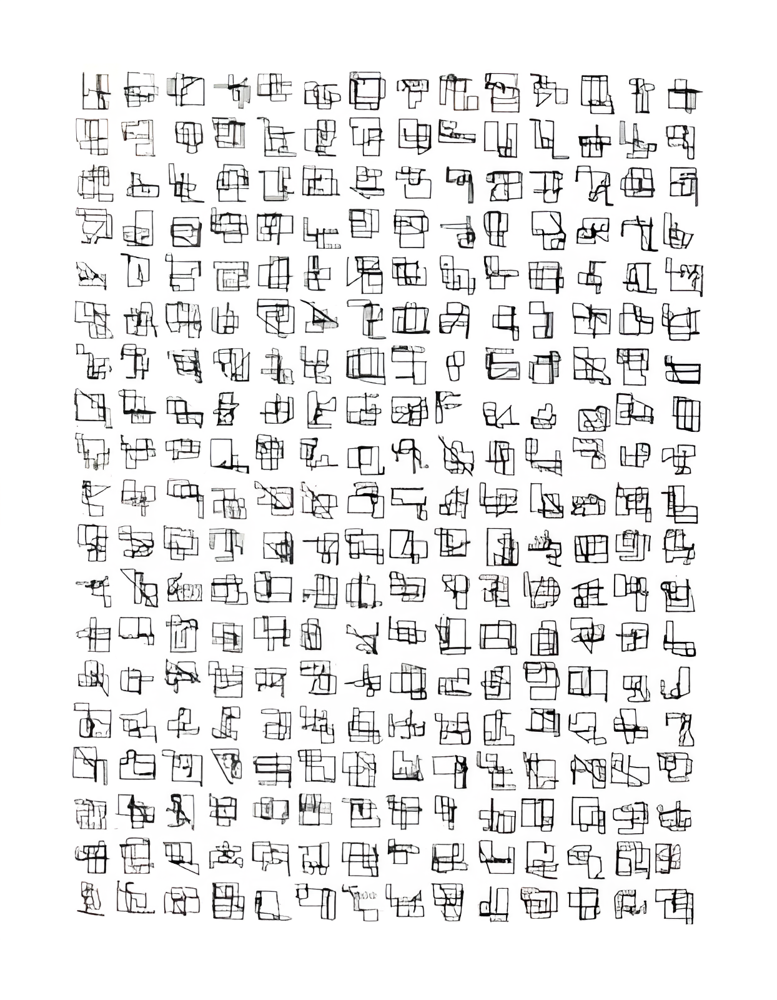
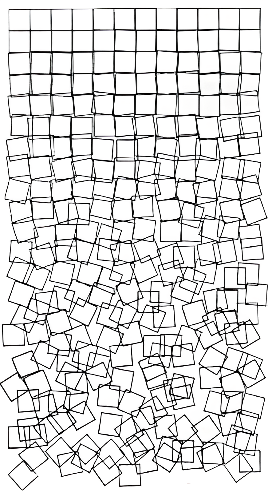
Early in 1965, Bense’s lecture rooms hosted the first-ever display of computer-generated art, featuring a dozen or so abstract, black-and-white designs created algorithmically by Nees on the recently released Zuse Graphomat Z64 plotter (fig. 2.2) (Klütsch 2012). Just as those lithic tools from 40 kyr ago (Rodrı́guez-Vidal et al. 2014), the plotter has been repurposed for non-utilitarian use, an analogy that holds in the form but perhaps not in the content. Ihde would argue that a lithic tool affords a substantially different mediation from that of a plotter. Indeed the rock would not carve a wall without being attached to a hand, yet for a plotter it is only necessary to input the code and press a button. In other words, the actions of the author on the plotter affect the output only indirectly.
A post-phenomenological reflection is due here. GOFAI and the trend of symbolic reasoning offer a new way to see the world: as computation. Analytical thinking is in many ways married to CT as discussed earlier, so Bense’s attempt to define aesthetics objectively (Nake 2012; Klütsch 2012) falls perfectly in line with the program. He is seeking a formal definition of Beauty, with necessary conditions for its application. The generative art movement is set out to expose the aesthetics of mathematics, logic and computation.
Conceptually, this was perceived both as strength and weakness in the early days of generative art. The innovative aspect in these artistic designs was the focus on the process, as Nake puts it: . However, to the audience this may not be obvious by just looking at the output (some examples presented in Figure 2.3) and at Bense’s exhibitions the reactions were intense (Klütsch 2012). To appreciate this kind of artwork one must understand the relationship between the author, the program and the machine that produced it.
While the human-technology relation in generative art is not entirely dissimilar to the combination, the programmable plotter introduces a level of abstraction (i.e. the program) that is understood by the functioning of the plotter. Much like Latour’s door (Latour 1990), it is through the effort of both the human symbolic abstraction and the machine’s embedded compatibility with it that these generative designs come into being. It is important to note that computer code is a necessary abstraction when using a plotter: it is perfectly possible to draw geometrical shapes using a pencil without knowing a formal procedure that generates them, but the same is not true for a plotter. This necessity shifts the attention towards the technology itself, leaving the output as an indirect byproduct of the interaction.
Alongside GOFAI another stream of research was concerned with a different agenda: modeling the biology of a human brain as a network of its primary components, the neurons. The perceptron, developed by (Rosenblatt 1958), is considered to be the first formalization of a neural network, although at the time it did not receive much attention. Two decades later, in light of the criticisms directed towards CT and the GOFAI approach, a new stream of researchers set out to explore the use of neural networks as alternative implementation of human cognition. This scientific agenda is known as connectionism, a branch of cognitive science that emerged in the 1980s. Connectionism is based on the idea that mental processes can be implemented as networks of interconnected neurons. Some of the main exponents of connectionism are David Rumelhart, James McClelland, and Geoffrey Hinton.
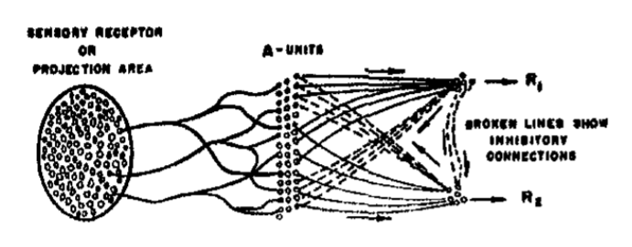
Connectionism embraces a biologically-inspired framework of the mind, diverging from the logical model prevalent in GOFAI. The primary objective of this research endeavor is to comprehend human cognitive processes through simulation rather than the development of thinking machines. This perspective, commonly known as weak-AI, stands in contrast to strong-AI, which is dedicated to attaining Artificial General Intelligence (AGI).
Within a neural network, each neuron operates autonomously, resulting in decisions that are inherently local. Consequently, interpreting the values of individual neurons becomes challenging. This intrinsic locality attribute contributes to the limited dependability of neural networks in performing logical operations, a limitation that persists to this day. For example, (Brown et al. 2020), state . This should not be surprising because GPT is not intended to be used as a calculator, rather capture probabilistic features of language tokens and their relationships with other tokens.
Connectionism asserts that cognition can be understood as an emergent property of neural networks, which can learn to recognize patterns in data through backpropagation. This process involves adjusting the weights between neurons to minimize prediction errors. According to connectionists, this type of learning enables neural networks to generalize from examples, making them more powerful than traditional symbolic models that rely on explicit rules.
These claims have been supported by numerous studies conducted over the past few decades. For example, (Rumelhart, McClelland, and PDPResearchGroup 1987) demonstrated how backpropagation could be used to train a network to recognize handwritten digits with high accuracy. Similarly, (Waibel et al. 1989) showed how neural networks could be used to recognize phonemes for speech recognition. Finally, McClelland et al ((1987)) demonstrated how a network could be trained to recognize the structure of sentences in natural language. These studies provide evidence that neural networks can learn complex patterns from data and generalize them to new situations, making them powerful tools for solving cognitive tasks.
Parallel distributed processing, as advocated by McClelland and Rumelhart, defines a different computing paradigm that contrasts the established GOFAI approach. Much like CT and PT, the two schools rely on different assumptions about how concepts should be represented. In practical terms, the GOFAI approach was at the time much more developed and established due to its commercialization, while parallel processing hardware was complex, expensive and relegated to research. The first wave of excitement about neural networks was primarily due their scientific explanatory power into the biology of the brain, but the high computational cost, their complexity and unpredictability kept the enthusiasm at bay, at least until the early ’00s.
A compelling hybrid theory has been proposed by (Gärdenfors 2000). The author posits that concept formation cannot be accurately depicted by either the GOFAI or connectionist approach, as neither adequately addresses the concept of similarity. Gärdenfors recommends incorporating a third intermediate layer that utilizes geometric structures to better model similarity relations. In this framework, concept formation is closely associated with identifying convex regions in space, as demonstrated in Figure 2.5. While convex regions arise from physical properties such as color or shape for raw perceptual dimensions, the same cannot be assured for abstract dimensions like Justice or Honesty. The fact that convex regions are found for a given conceptual space validates the conceptual-space and its dimensions, but this might lead to confirmation bias (see the swans example in Section [sec:the-problem-of-ignorance-and-error]).
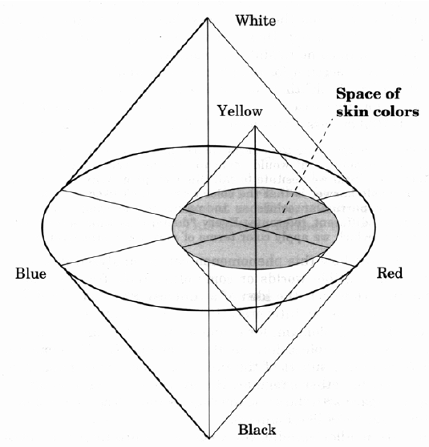
In spite of its shortcomings, (Gärdenfors 2000) theory of conceptual spaces still provides great insights into modern AI. A growing number of authors made attempts to integrate symbolic reasoning and deep learning, employing different strategies which, can be grouped into . Some of these architectures, such as the neuro-symbolic concept learner by (Mao et al. 2019), may be considered almost direct implementations of Gärdenfors (2000)’ framework.
The intuition that concepts may be described by topological properties finds at least partial confirmation in the reliance of modern deep learning on the idea of latent space. Latent spaces are in fact topological entities that encode training data to a space with less dimensions, a process that may be considered a form of compression and abstraction. The last decade has seen remarkable development in the understanding of latent spaces and their application.
A new wave of research on neural networks came around in the early 2010s, also known as Deep Learning (DL). DL is a subset of Machine Learning (ML) that uses neural networks with numerous layers to learn from data and make decisions. Since then, it has become one of the most popular and influential fields in AI research, with an exponential growth in the number of papers published every year (Krenn et al. 2022). Geoffrey Hinton, Yann LeCun and Yoshua Bengio were credited as its founding fathers and received the ACM A.M. Turing Award in 2018 for their contribution.
Deep Learning algorithms are used for various tasks such as image recognition, natural language processing (NLP), speech recognition, autonomous driving and robotics. The major achievements of DL include breakthroughs in computer vision tasks such as object detection and segmentation; NLP tasks such as machine translation; speech recognition tasks such as automatic speech recognition; and reinforcement learning tasks such as game playing.
One of the most influential papers in the field was published by Hinton, Osindero, and Teh (2006) in (2006) titled . This paper introduced a new algorithm called deep belief nets which allowed for faster training times than traditional neural networks. This paper laid the foundation for many subsequent advances in deep learning research.
(Krizhevsky, Sutskever, and Hinton 2012) published a paper titled which introduced the AlexNet architecture. This paper demonstrated that deep learning could be used to achieve state-of-the-art performance on image classification tasks. This breakthrough was followed by many other papers in the field, such as Szegedy et al. (2014)’s (2014) paper and He et al. (2015)’s (2015) paper , which further improved the performance of deep learning models on image recognition tasks.
In 2016, Google Brain researchers published a foundational paper titled which proposed a new type of neural network called Transformer (Vaswani et al. 2017). This model was able to achieve state-of-the-art results on various NLP tasks such as machine translation and text summarization without using any recurrent layers or convolutions. One of the key aspects that this architecture introduces is the concept of self-attention. Self-attention layers learn how different elements in a sequence are related (or unrelated) to other elements. Compared to recursive neural networks (RNNs) the transformer-attention architecture processes sentences all at once, rather than word by word, which allows for better parallelization, leading to more efficient training and inference time.
In light of what has been discussed about compositionality in the previous section, it is worth noting that self-attention in seq2seq (transformers) models seems to capture at least some aspects of language compositionality. From a theoretical standpoint, token embedding dimensions as intended in DL could be assimilated to Jackendoff’s semantic fields that are described by probability distributions. Self-attention in neural networks is able to capture only salient relationships between tokens in a sequence therefore enabling specific inter-dependent predictions starting from any pair of tokens.
These achievements mark a trend that has been on rise for almost two decades. One of the factors that contributed to this upward trend is also the increased accessibility of hardware that can afford the kind of computation neural networks require. In the early 2000s a small number of academics began looking into the use of graphics processing units (GPUs) for DL algorithms (another lithic tool gets repurposed!). These devices are well suited for it despite being initially created for rendering graphics because they are engineered to run mathematical operations of linear algebra (matrix multiplications, vector dot products, etc...) leveraging parallel computation.
Another fundamental contributing factor is the availability of large amounts of data and metadata in digital form accessible through the internet. The Web 2.0 era allowed for users to become producers of their own media through mobile phones, flooding the internet with user generated content. This perhaps commercially driven push towards ML-based data analysis stimulated innovation aimed at dealing with the scale and magnitude of the accumulated information. In fact, a defining characteristic of popular DL tools of today is precisely that they have been learning at massive scale. Such is the case for GPT3, trained on 45TB of text data, or Stable Diffusion, trained on 5.85B images.
These factors, and possibly many others, have lead us to the tools we have today which are based on deep learning. Of particular interest for creativity studies is the subfield of Generative Deep Learning (GDL), which is particularly concerned with deep learning models that can generate output rather than simply classify data.
GDL offers a novel method for creating unique artifacts. The generated content retains a consistent set of characteristics, such as a face, while allowing for variations from the original training dataset, such as altering the hairstyle or transforming a frown into a smile (Pumarola et al. 2019). An additional advantage of GDL is that these large unsupervised models can extract features without requiring an annotated dataset. For instance, the authors of StyleGAN2 assert: . In practice, unsupervised learning enables Deep Neural Networks (DNNs) to process extensive corpora of text, images, or sounds and acquire a set of parameters that can be modified and employed for synthesizing new outputs.
The precise nature of these parameters learned by DNNs remains somewhat elusive, particularly given the challenges that TOCs face in defining concepts and their properties. At the most basic level, it can be inferred that these parameters represent the properties and compositional relations (utilizing self-attention) of the input data they aim to replicate. However, questions arise regarding how DNNs extract these dimensions, the meaning of concept learning in this context, and whether this process can be deemed inherently creative (Hoorn 2023).
The creative process requires a medium: when we create, we always create something. Creative artifacts exist in relation to their supporting technology and are therefore bound to the support’s affordances. When a new technology emerges, the exploration of its novel affordances might bring disruption in what an audience believes it means to be creative. In many cases, the introduction of a new technology also produces a shift in the aesthetic sensitivity, and sometimes even assembles a new community of reference. As the progress of technology becomes part of the background of our society, the audience will naturally shift the selection criteria for what is considered novel and valuable.
Indeed, any attempt to create an intensional definition for the term creativity may necessitate an audience of reference responsible for evaluating specific attributes such as novelty or value (Newell, Shaw, and Simon 1959; Rhodes 1961; Boden 2003). Similar to Meno (see Section [sec:platosproblem]), the audience may encounter difficulties in formulating such definitions. Consequently, differing perceptions of novelty and value may arise among various audiences. It appears nearly inescapable that, when discussing creativity, we must accept an extensional definition and acknowledge that evaluations of creative output will invariably reflect human bias (Hoorn 2023).
Over the past two decades, advancements in computing technology have led to several modifications in how creativity is assessed. The Computational Creativity (CC) community has revisited the concept of creativity to accommodate non-human artifacts:
[t]he performance of tasks which, if performed by a human, would be deemed creative
This criterion is agent-agnostic and focuses solely on the output. The underlying assumption is that different instances of the creative process will generate artifacts with varying creative value. Colton (2008) also asserts:
While it is not a necessary requirement, there is an implicit assumption that to produce the most pleasing artefacts, aspects of human creative behaviour will have to be simulated
However, a certain ambiguity arises when attributing creative qualities to artificial agents based solely on their output. Notably, AlphaGo’s (Silver et al. 2016) move 37 was met with astonishment by commentators, the audience, and Sedol himself. This move could arguably be considered creative, but it did not originate from a simulation of human Go-playing strategies1. AlphaGo Zero (Silver et al. 2017) surpassed AlphaGo by eliminating human bias and relying solely on self-play to develop its strategies. Nevertheless, an agent must incorporate a minimal set of assumptions about the world, which will determine the potential or desired outcomes. Even in the case of AlphaGo Zero, which was not exposed to human gameplay during training, the rules of Go constitute the minimal instructions required for task performance. Once this space is defined and explored by an agent without human intervention, non-human solutions that could be deemed creative may emerge.
As counter argument, it is then fair to ask whether AlphaGo’s move 37 can be deemed as not creative. After all it is the algorithm’s goal to explore game-winning strategies, the fact that it came up with its own distinctive ones is in line with the instructions it was given, how is this surprising? From this perspective, move 37 may be considered just a display of an alien way of thinking (Fazi 2018) that perhaps just is to be deemed as intelligent rather than creative. Furthermore, AlphaGo’s alien strategies may not be of any value to humans, since we do not have the computing power in our brains to come up with those moves ourselves.
We meet here at an ontological fork in the road. What does it mean for a technology to be described as creative? Is it something about the form of its internal processes? Or is it just about the judgment of its output by experts? How does the human interaction with technology come into play? The field of CC has been trying to address these theoretical questions and provide space for technical solutions to be shared and discussed. In order to better understand the discourse around computational creativity and its reception of the probabilistic turn, a systematic literature review has been conducted.
The systematic literature review presented in this section has two main purposes. The first one is to identify the research questions and topics discussed in the field and the second is to expose the effects of current shift towards probabilistic models in CC.
The corpus of 386 papers under review has been retrieved from Scopus
search using the query string
KEY("computational creativity") as of March 2023. The full
reference, abstract and number of citations of each paper has been
retrieved via API using custom code provided in Appendix A. The papers
in the corpus were categorized according to three dimensions:
The medium addressed in the paper. The list of possible choices of medium has been defined as:
No medium
Visual, images and movies
Music and musical composition
Design, urban design, architecture
Writing, narrative and language
Game design
Concepts
Culinary recipes
Multi-modal
The theoretical scope of the paper:
Evaluation: the paper discusses the evaluation of artifacts.
Theory: the paper discusses a particular theory or hypothesis about creativity.
System: the paper presents a technical implementation of a specific creative system.
Other: the scope of the paper does not fit any of the other categories.
The computational approach adopted or discussed in the paper:
Rule-based: these are methods that follow deterministic rules and definitions, such as expert systems.
Evolutionary algorithms: genetic algorithms and other methods inspired by evolution.
Data-driven: this includes deep learning, machine learning and other probability based approaches.
Other: the paper does not belong to any of the above or there is no specific approach.
The categorization process utilized can be summarized as follows:
Skim all papers and identify the categories listed above.
Ask GPT3.5 to categorize each paper and provide an explanation for its choices.
Review categorization, assess accuracy, adjust if necessary.
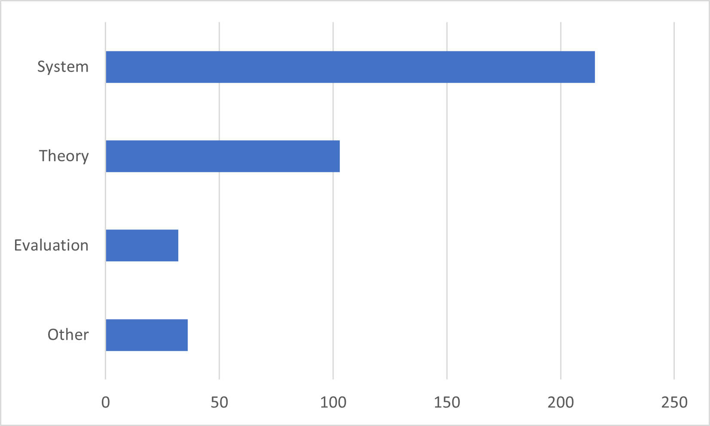
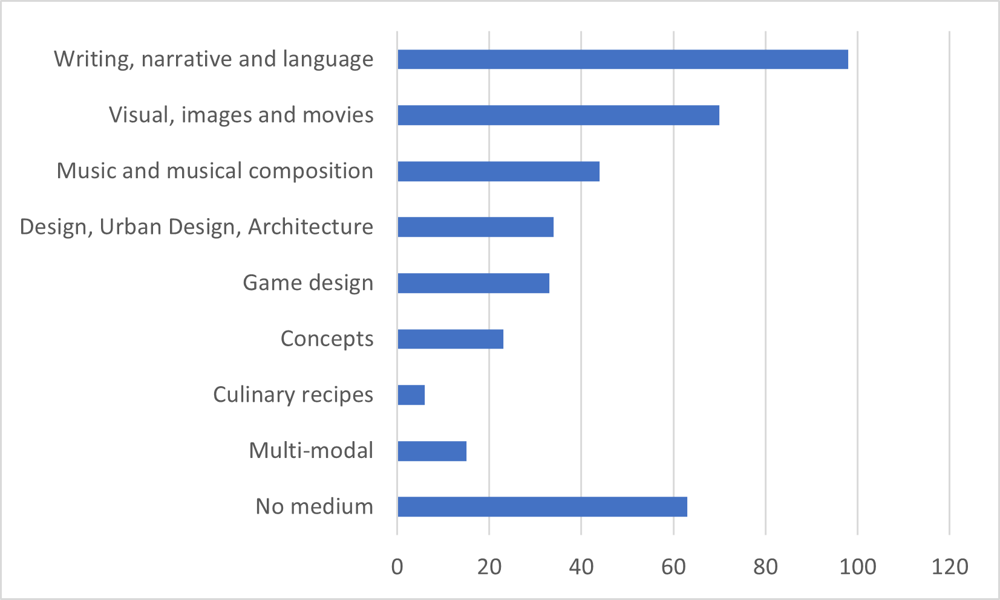
The use of GPT3.5 to support the categorization task is to be considered mostly as an exploration of the capabilities of this tool, rather than a validation. In fact, a preliminary categorization exercise was already performed in early 2020 at the beginning of my doctoral journey. The addition of this intermediate step was inspired by the curiosity of how accurate GPT’s categorization might be, given that traditional methods such as topic modeling did not yield satisfying results. GPT was tasked with assigning to each paper a value for each of the dimensions specified above (the prompt used can be found in appendix 9). After reviewing the assigned, GPT’s classification was given a score from 0 to 3 based on how many dimensions were considered correct. According to this measurement, GPT’s accuracy over the whole corpus was ≈ 88%. Considering that GPT did not have visibility over the full text of each paper and that some abstracts did not have all the information required to make an accurate judgment, this method proved to be rather effective in assisting to categorize the corpus, especially for those cases that are relatively straightforward.
Figure 2.6 and 2.7 summarize the number of papers by scope and media respectively. Over half (≈55%) of the papers examined discuss the implementation of a specific system, indicating that the community provides space for practical experimentation. The rest of the papers address theoretical issues regarding either creativity itself (≈26%), the topic of evaluation of creativity (≈8%), and other topics such as reviews of the field or historical perspectives (≈10%). As for the media distribution, the top three are unsurprisingly language (≈25%), images (≈18%) and music (≈11%), followed closely by design (≈8%), game design (≈8%) and concepts (≈6%, mostly discussing conceptual blending). Not all papers discuss creativity within the context of a specific medium, 16% of them take a more abstract approach and focus on exploring creativity purely from a theoretical standpoint. Further analysis of the breakdown shown in Figure 2.8 summarizes the medium based on each of the identified scopes. As expected, most theory papers do not discuss a specific medium, rather tackle the topic of creativity as an abstract process, disentangled from a specific application. The majority of papers discussing evaluation of creativity, however, seem to be primarily situated in a specific domain, with only 5 papers identified as addressing the topic without focusing on a medium.
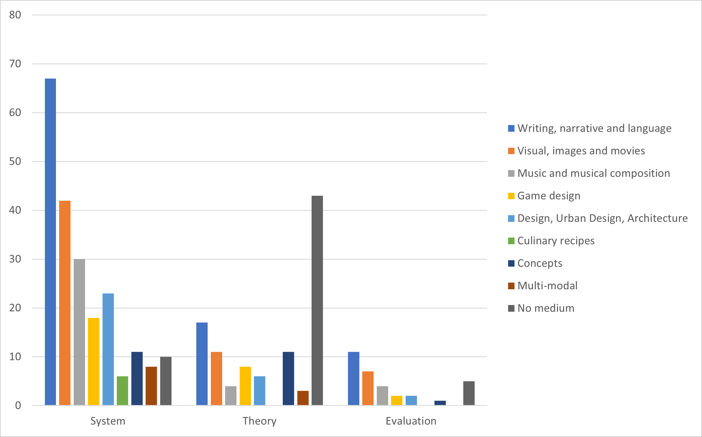
Figure 2.9 displays the number of papers adopting a specific approach, broken down by year. This chart is particularly interesting in relation to the probabilistic trend emerging in recent years. The sharp decline of rule-based approach papers makes space to new discussions around data-driven methods. This trend also produces a shift in the scope of the papers, as shown in 2.10. It seems that not as many new system implementations have been produced in the last 4 years as in the previous years, but instead the discussion seems to have shifted towards theory and evaluation of systems that are not built by the community but are publicly available, such as GPT (Radford et al. 2019). The different ratio between the amount of systems and the amount of papers discussing theory or evaluation across different approaches is also noticeable in the breakdown presented in 2.11, which seems to confirm this intuition.
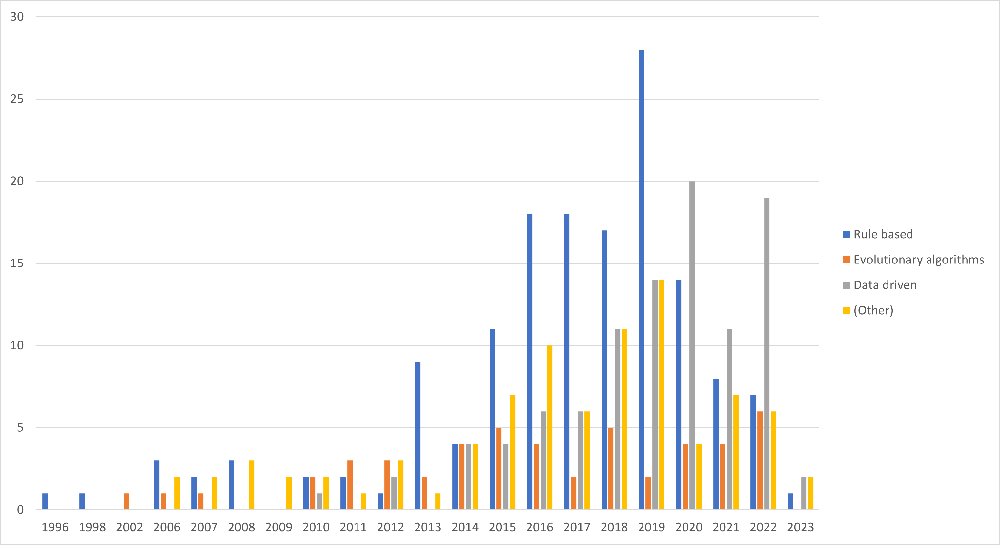
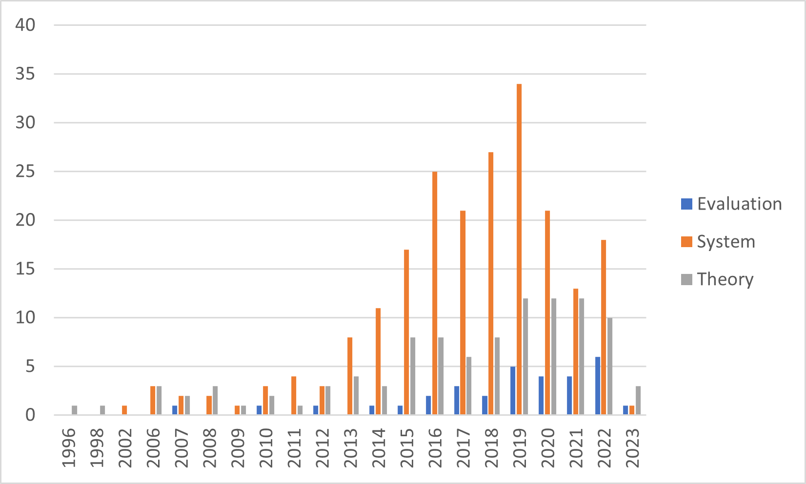
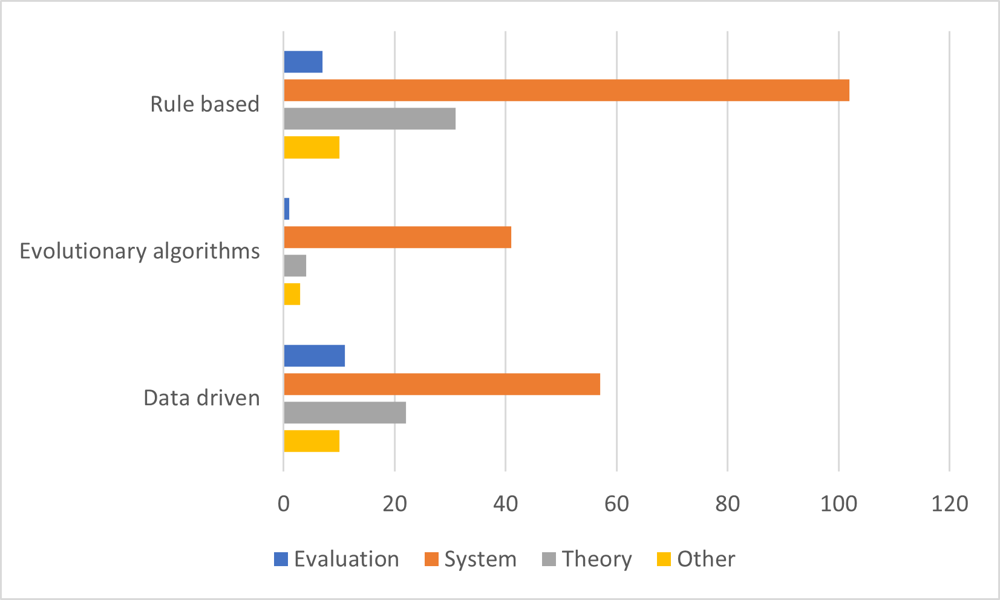
What does this mean for the CC community and the future of research in this field? If this trend continues, it is plausible that the community will develop a deeper understanding of how DL systems fit into the creative process. It is also possible that the ecosystem of computational creativity will display less diversity in the range of tools used, as the big players converge towards a fully multi-modal experience, such as the one offered by GPT4. Perhaps this will allow the community to focus on questions regarding the implications of using these tools in our everyday life. In any case, it seems evident from this data that, in the last 4 years, the field has witnessed a sharp turn towards a new form of computational creativity, which is not implemented directly by the community itself. Academic research is perhaps now chasing the forefront of development rather than leading it.
This literature review addressed several bodies of work in different fields with broad strokes, attempting to find trans-disciplinary links between them. It highlighted possible links between the study of conceptual categorization in humans, different approaches to AI and the post-phenomenological view of technology. It also exposed the DL trend that is unfolding in the field of CC, which arguably embeds a theory of concept of its own. This review also shows the possibility for a fruitful encounter between the post-phenomenological view of technology and non-human creativity theory, which so far has not been explored, to the best of my knowledge. In the next chapter I will attempt to frame the different approaches to AI and their underlying assumptions about what concepts are under the post-phenomenological interpretation, with specific focus on technologies that mediate human creativity.
Definitions get you into that time trap, and I’m very much more process-focused. Take Lucy, for example. Lucy is famous largely because she has almost a total skeleton. The more sophisticated we get with instruments, the more we can find out. Through CT scans of her skeleton, they now think she died falling out of a tree because of the way her bones are broken. If nineteenth and twentieth century technologies can retroactively transform our bodiment, what then do the technologies we now use do?